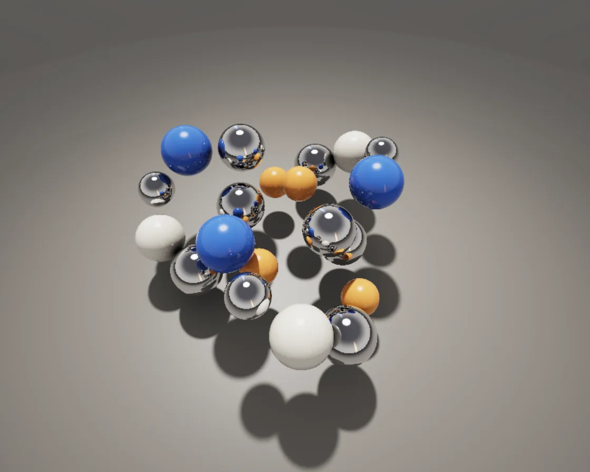

Spheres on a knot
Spheres on a knot is a WebGL effect: analytically ray-traced spheres with soft shadows and interreflections. One plain JavaScript file with no dependencies; add it with npx motion-library add path-spheres.

Open it live, tune it and copy the code
What is Spheres on a knot?
Chrome and coloured balls slide along a trefoil knot, mirroring each other and the floor.
How does Spheres on a knot work?
Analytic ray–sphere and ray–plane intersection with up to three bounces, no marching; soft shadows come from how closely the shadow ray misses each ball.
How do I add Spheres on a knot to my website?
- In your project folder, run
npx motion-library add path-spheres. It writesanimations/path-spheres.js. Needs Node 18 or newer. - Import it and call it with a container element that has a size:
import fx from './animations/path-spheres.js'; const stop = fx(document.querySelector('#hero')); - Call
stop()to clean up, for example when a component unmounts.
Every setting below is also a flag, so you can install it already tuned: npx motion-library add path-spheres --spheres 24.
What settings can I tweak?
| Setting | Flag | Default | Range | Step |
|---|---|---|---|---|
| Balls | --spheres | 20 | 3 to 24 | 1 |
| Speed | --speed | 1 | 0 to 3 | 0.05 |
| Breathing | --breathe | 1 | 0 to 2 | 0.05 |
Specifications
- Renderer
- WebGL
- Category
- Chrome & 3D
- Dependencies
- None
- File size
- 8.2 KB, unminified
- Interactive
- No: it plays on its own
- Reduced motion
- Plays the same for everyone
- Licence
- MIT-0: use it anywhere, no credit needed
Source code
// Path spheres: glossy balls riding a trefoil knot above a studio floor, each one breathing in size. Spheres
// and a plane can be hit exactly, so every pixel is ray traced analytically: up to three bounces (balls mirror
// each other and the floor), soft shadows from each ball's penumbra, and ambient occlusion where they crowd.
const PARAMS = { spheres: 20, speed: 1, breathe: 1 };
export default function (stage) {
const canvas = document.createElement('canvas');
canvas.style.cssText = 'position:absolute;inset:0;width:100%;height:100%;display:block';
stage.append(canvas);
const gl = canvas.getContext('webgl2', { antialias: false });
if (!gl) { stage.textContent = 'This needs WebGL2.'; return () => canvas.remove(); }
const vs = `#version 300 es
in vec2 p; out vec2 uv; void main() { uv = p * .5 + .5; gl_Position = vec4(p, 0, 1); }`;
const fs = `#version 300 es
precision highp float; in vec2 uv; out vec4 o;
uniform vec2 R; uniform int N; uniform vec4 S[24]; uniform vec3 CE, CF, CR, CU; uniform float AA;
const vec3 LD = vec3(-.36, .9, -.3);
vec3 sky(vec3 d, float strips) {
vec3 l = normalize(LD);
vec3 c = mix(vec3(.16, .15, .15), vec3(.5, .48, .46), smoothstep(-.3, .15, d.y));
c = mix(c, vec3(.1, .1, .11), smoothstep(.2, .8, d.y)); // dark ceiling, so chrome has contrast
c += vec3(1., .97, .92) * 4. * smoothstep(.965, .985, dot(d, l)); // round key softbox
float az = atan(d.x, d.z), band = smoothstep(-.05, .2, d.y) * smoothstep(.7, .35, d.y) * strips; // the floor's faint reflection skips the strips
c += vec3(2.3, 1., .35) * smoothstep(.08, .02, abs(az - 1.2)) * band; // tangerine strip
c += vec3(.4, .75, 2.2) * smoothstep(.08, .02, abs(az + 2.1)) * band; // cobalt strip
return c;
}
float iSph(vec3 ro, vec3 rd, vec4 s) { vec3 oc = ro - s.xyz; float b = dot(oc, rd), c = dot(oc, oc) - s.w * s.w, h = b * b - c; return h < 0. ? -1. : -b - sqrt(h); }
float softSh(vec3 ro, vec3 rd, vec4 s, float k) { // penumbra from how near the ray passes the ball
vec3 oc = ro - s.xyz; float b = dot(oc, rd), c = dot(oc, oc) - s.w * s.w, h = b * b - c;
float d = sqrt(max(0., s.w * s.w - h)) - s.w, t = -b - sqrt(max(h, 0.));
return t < 0. ? 1. : smoothstep(0., 1., 2.5 * k * d / t);
}
float occl(vec3 p, vec3 n, vec4 s) { vec3 di = s.xyz - p; float l = length(di), h = l / s.w; return max(0., dot(n, di / l)) / (h * h); }
int trace(vec3 ro, vec3 rd, out float t) {
t = 1e9; int id = -1;
for (int i = 0; i < 24; i++) { if (i >= N) break; float d = iSph(ro, rd, S[i]); if (d > 1e-3 && d < t) { t = d; id = i; } }
if (rd.y < 0.) { float tp = -ro.y / rd.y; if (tp > 1e-3 && tp < t) { t = tp; id = 99; } }
return id;
}
vec3 backdrop(vec3 d) { return mix(vec3(.12, .115, .11), vec3(.06, .06, .065), smoothstep(-.2, .3, d.y)); }
vec3 render(vec2 q) {
vec3 ro = CE, rd = normalize(CF * 1.65 + CR * q.x + CU * q.y), col = vec3(0), thr = vec3(1), l = normalize(LD); bool onFloor = false;
for (int b = 0; b < 3; b++) {
float t; int id = trace(ro, rd, t);
if (id < 0) { col += thr * (b == 0 ? backdrop(rd) : sky(rd, onFloor ? 0. : 1.)); break; }
vec3 p = ro + rd * t, n = id == 99 ? vec3(0, 1, 0) : normalize(p - S[id].xyz);
onFloor = id == 99;
float sh = 1., ao = 1.;
for (int i = 0; i < 24; i++) { if (i >= N) break; if (i == id) continue; sh *= softSh(p + n * 1e-3, l, S[i], 7.); ao -= occl(p, n, S[i]); }
ao = clamp(ao, 0., 1.);
int m = id == 99 ? 4 : id - (id / 2) * 2 == 0 ? 0 : 1 + (id / 2) - ((id / 2) / 3) * 3; // every other ball chrome, the rest tangerine, bone, cobalt
vec3 alb = m == 1 ? vec3(.95, .36, .1) : m == 2 ? vec3(.86, .82, .74) : m == 3 ? vec3(.06, .16, .62) : vec3(.25, .24, .23);
float cv = max(dot(n, -rd), 0.), f0 = m == 0 ? .92 : id == 99 ? .02 : .045, fr = f0 + (1. - f0) * pow(1. - cv, 5.);
vec3 h = normalize(l - rd);
float dif = max(dot(n, l), 0.) * sh * 1.25, spec = pow(max(dot(n, h), 0.), m == 0 ? 400. : 140.) * sh;
vec3 amb = mix(vec3(.2, .19, .19), vec3(.42, .41, .4), n.y * .5 + .5) * ao;
float pool = id == 99 ? exp(-dot(p.xz, p.xz) * .05) : 1.; // a pool of light under the knot
vec3 direct = m == 0 ? vec3(0) : alb * (dif * pool * vec3(1.15, 1.1, 1.02) + amb);
col += thr * ((1. - fr) * direct + spec * 2.2 * (m == 0 ? 1. : fr * 6.));
float fog = b == 0 && id == 99 ? smoothstep(6., 16., t) : 0.;
col = mix(col, backdrop(rd), fog); // the floor fades into the studio
thr *= m == 0 ? vec3(.93, .93, .95) * (fr * .9 + .1) * mix(1., ao, .6) : vec3(id == 99 ? min(fr, .1) * .7 : fr);
thr *= 1. - fog; // and so does its reflection
if (max(thr.x, max(thr.y, thr.z)) < .02) break;
ro = p + n * 1e-3; rd = reflect(rd, n);
}
return col;
}
vec3 aces(vec3 x) { return clamp((x * (2.51 * x + .03)) / (x * (2.43 * x + .59) + .14), 0., 1.); }
void main() {
vec3 c = vec3(0);
for (int j = 0; j < 2; j++) for (int i = 0; i < 2; i++) {
if (float(i) >= AA || float(j) >= AA) continue;
vec2 f = gl_FragCoord.xy + (vec2(i, j) + .5) / AA - .5;
c += render((f / R * 2. - 1.) * vec2(R.x / R.y, 1.));
}
c = aces(c / (AA * AA) * .85);
c *= 1. - .22 * pow(length(uv - .5) * 1.3, 2.);
o = vec4(pow(c, vec3(1. / 2.2)), 1);
}`;
const sh = (t, s) => { const x = gl.createShader(t); gl.shaderSource(x, s); gl.compileShader(x); if (!gl.getShaderParameter(x, gl.COMPILE_STATUS)) throw new Error(gl.getShaderInfoLog(x)); return x; };
const prog = gl.createProgram(); gl.attachShader(prog, sh(gl.VERTEX_SHADER, vs)); gl.attachShader(prog, sh(gl.FRAGMENT_SHADER, fs)); gl.bindAttribLocation(prog, 0, 'p'); gl.linkProgram(prog); gl.useProgram(prog);
gl.bindBuffer(gl.ARRAY_BUFFER, gl.createBuffer()); gl.bufferData(gl.ARRAY_BUFFER, new Float32Array([-1, -1, 3, -1, -1, 3]), gl.STATIC_DRAW);
gl.enableVertexAttribArray(0); gl.vertexAttribPointer(0, 2, gl.FLOAT, false, 0, 0);
const U = {}; ['R', 'N', 'S', 'CE', 'CF', 'CR', 'CU', 'AA'].forEach(n => U[n] = gl.getUniformLocation(prog, n));
const resize = () => { const d = Math.min(devicePixelRatio, 1.5); canvas.width = stage.clientWidth * d | 0; canvas.height = stage.clientHeight * d | 0; gl.viewport(0, 0, canvas.width, canvas.height); };
const ro = new ResizeObserver(resize); ro.observe(stage); resize();
// the trefoil, laid flat with its over/under crossings becoming height
const knot = s => [(Math.sin(s) + 2 * Math.sin(2 * s)) * 0.6, 1.05 - Math.sin(3 * s) * 0.45, (Math.cos(s) - 2 * Math.cos(2 * s) + 0.5) * 0.6];
const Sf = new Float32Array(96), nrm = a => { const l = Math.hypot(...a); return a.map(v => v / l); };
let raf, last = performance.now(), phase = 0; const t0 = last;
function frame(now) {
const t = (now - t0) / 1000, dt = Math.min(0.05, (now - last) / 1000); last = now;
phase += dt * 0.16 * PARAMS.speed;
const n = Math.max(1, Math.min(24, Math.round(PARAMS.spheres))), base = Math.min(0.42, 6.2 / n);
for (let i = 0; i < n; i++) {
const p = knot(phase + i / n * Math.PI * 2), r = base * (1 + 0.2 * PARAMS.breathe * Math.sin(t * 1.7 + i * 2.1));
Sf.set([p[0], p[1], p[2], r], i * 4);
}
const asp = canvas.width / canvas.height, fit = Math.max(1, 1.3 / asp), a = t * 0.09 + 0.6;
const eye = [Math.sin(a) * 3.4 * fit, 4.9 * fit, Math.cos(a) * 3.4 * fit], ta = [0, 0.35, 0];
const f = nrm(ta.map((v, i) => v - eye[i])), r = nrm([f[2], 0, -f[0]].map(v => -v)), u = [r[1] * f[2] - r[2] * f[1], r[2] * f[0] - r[0] * f[2], r[0] * f[1] - r[1] * f[0]];
gl.uniform2f(U.R, canvas.width, canvas.height); gl.uniform1i(U.N, n); gl.uniform4fv(U.S, Sf);
gl.uniform3fv(U.CE, eye); gl.uniform3fv(U.CF, f); gl.uniform3fv(U.CR, r); gl.uniform3fv(U.CU, u);
gl.uniform1f(U.AA, devicePixelRatio < 1.5 && canvas.width * canvas.height < 420000 ? 2 : 1); // supersample only small canvases
gl.drawArrays(gl.TRIANGLES, 0, 3);
raf = requestAnimationFrame(frame);
}
raf = requestAnimationFrame(frame);
return () => { cancelAnimationFrame(raf); ro.disconnect(); gl.getExtension('WEBGL_lose_context')?.loseContext(); canvas.remove(); };
}